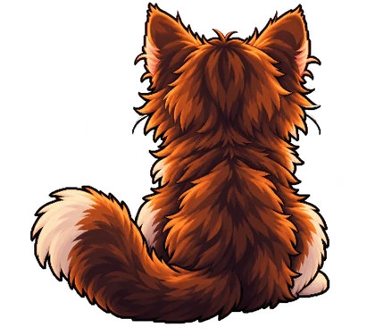
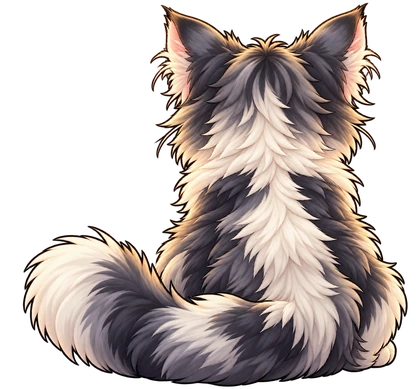

Pick a platform and press Start
You'll get the best-placed run with a YouTube or Twitch video, for a random game and category on that platform. When it ends, the next one starts.
NOW
PLAYING


Loading platforms…
Random platform
Start watching
Next place
Next run
Settings
Include misc. categories
Include ROM hacks and mods
Include fan games
Include Twitch videos
Show Spencer